Clasificación de eventos
Contenido
Clasificación de eventos¶
Uno de los objetivos principales de este trabajo es comparar algoritmos participantes en las LHCO 2020. Para ello, utilizamos como base algunos algoritmos sencillos ya implementados en librerías como scikit-learn[108] y uno programado usando tensorflow[109].
En esta sección se observarán algunas de las característica de la clasificación con estos algoritmos. Los modelos que se utilizan en esta sección son:
Nombre |
Implementación |
Tipo |
|---|---|---|
Random Forest Classifier (RFC) |
|
|
Gradient Boosting Classifier (GBC) |
|
|
Quadratic Discriminant Analysis (QDA) |
|
|
MLP Classifier |
|
|
Tensorflow Classifier |
|
|
KMeans |
|
explicados en la Sección 2.2.
Para este análisis, se utilizó un subconjunto de 500,000 eventos del conjunto de datos R&D.
Importancia de las características¶
Por la forma en la que clasifican, algunos modelos permiten conocer cuáles de las características de los eventos fueron las variables más relevantes para la clasificación. De los modelos en la Tabla 4.1, RFC y GBC asignan puntajes a las variables de acuerdo a su importancia.
De los modelos entrenados, se puede obtener la importancia de cada variable. Un gráfico de estos puntajes se observa en la y la {numref} para RFC y GBC, respectivamente.
# En esta celda graficamos las características más importantes para los modelos
# Obtenemos las características más importantes
# models[x][y] : x = 1(random forest), 2(gradient boosting); y = 0(nombre del modelo), 1(modelo entrenado)
fi_rf = models[1][1].steps[1][1].feature_importances_.tolist()
fi_gb = models[2][1].steps[1][1].feature_importances_.tolist()
# Redondeamos los puntajes
weights = [fi_rf, fi_gb]
weights = [[ round(elem, 3) for elem in weight ] for weight in weights]
# Obtenemos los nombres de los modelos
names_fi = [models[1][0], models[2][0]]
# Obtenemos los nombres de las características
features = X_train.columns.tolist()
# Juntamos los puntajes con las características en tuplas
importance = {}
ii = 0
for weight in weights:
f_i = list(zip(features, weight))
importance[names_fi[ii]] = f_i
ii +=1
# Graficamos en un bucle
colors=['darkorange', 'green']
ii = 0
for name, scores in importance.items():
# Ordenamos de menor a mayor
scores.sort(key=lambda x: x[1], reverse=False)
# Salvamos los nombres y su puntaje separados
# y revertimos las tuplas para tener de mayor a menor puntaje
features = list(zip(*scores))[0]
score = list(zip(*scores))[1]
x_pos = np.arange(len(features))
# Graficamos
plt.barh(x_pos, score,align='center', color = colors[ii])
plt.yticks(x_pos, features)
plt.xlabel('Feature importance')
plt.title('Feature importance: {}'.format(name))
plt.show()
ii += 1


Notamos que las características más relevantes para ambos clasificadores son la variable \(\tau_{21}\) y el \(p_T\) de los jets. En general, son relevantes las características que presentan distribuciones diferentes para señal y fondo.
Reconstrucción de distribuciones¶
De la clasificación con los distintos modelos, se pueden reconstruir las variables para observar cómo están clasificando los algoritmos.
En la observamos las variables más importante para clasificación de acuerdo a {numref}.
# En esta celda graficamos la masa invariante predicha
variables=['pT_j2', 'tau_21_j1', 'tau_21_j2', 'n_hadrons']
for model in clfs:
for variable in variables:
# Obtenemos predicciones como pandas Series
pred = pd.Series(model.pred.flatten(), name='ypred')
# Obtenemos las etiquetas como pandas Serie
label = pd.Series(model.label, name='ytest').reset_index(drop=True)
# Juntamos las masas, las predicciones y las etiquetas
X_plot = pd.concat([X_test.reset_index(drop=True), X_test_m.reset_index(drop=True), pred, label], axis=1)
# Graficamos
pred_test_hist(X_plot, variable, ypred='ypred', ytest='ytest', n_bins=50, log=False)
plt.title('{}: distribución de {}'.format(model.name, variable))
plt.show()
del X_plot, pred, label

 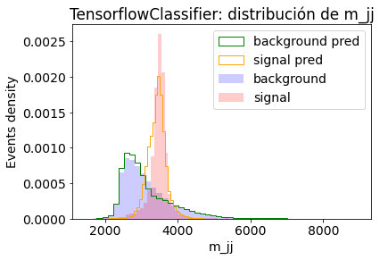
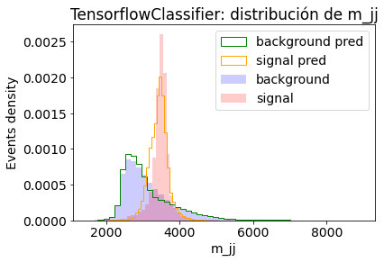
 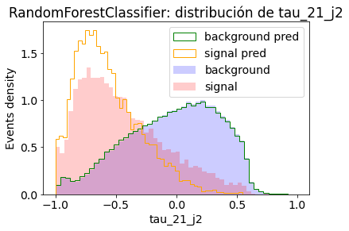
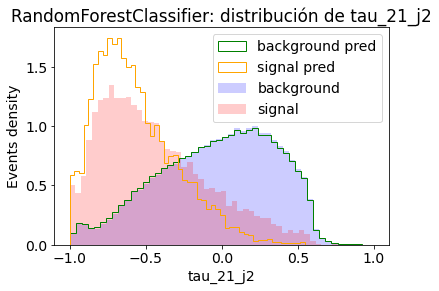
 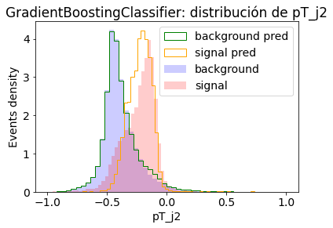
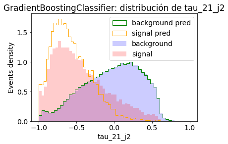
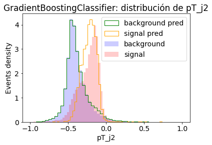
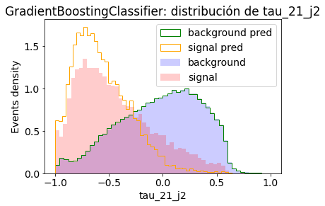


 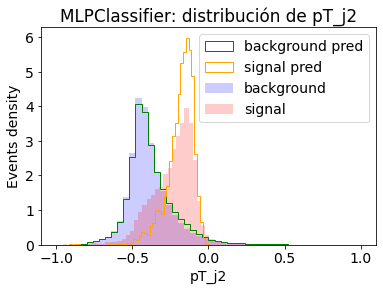
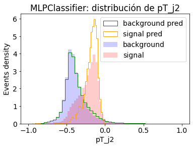


# Obtenemos los datos de todos los clasificadores
names = [clf.name for clf in clfs]
scores = [clf.score for clf in clfs]
preds = [clf.pred for clf in clfs]
labels = [clf.label.to_numpy() for clf in clfs]
# Graficamos algunos plots
rejection_plot(names=names, labels=labels, probs=scores)
plt.show()
precision_recall_plot(names=names, labels=labels, probs=scores)
plt.show()
 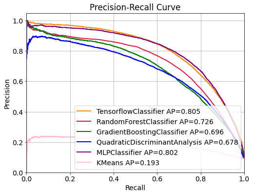
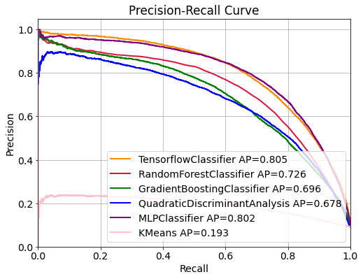